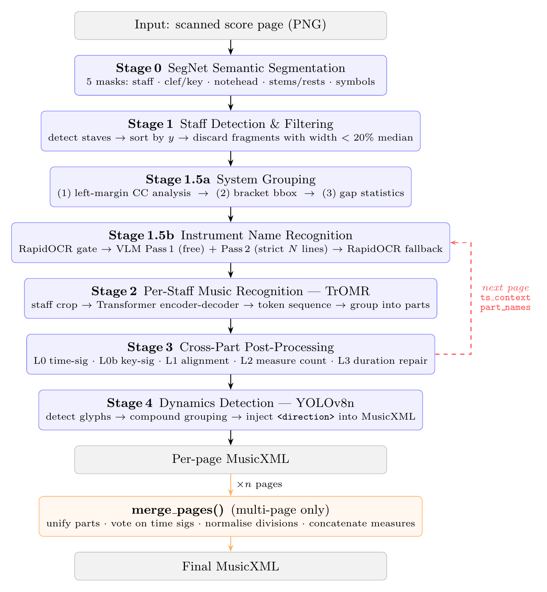

Full-score orchestral MusicXML
The runner handles PDF rendering, page recognition, context propagation, and final MusicXML writing, so the system can be used directly on scanned score PDFs. GPU acceleration is supported but not required.
GrandOMR is built for full orchestral scores: it preserves instrument identity, repairs score-level structure, detects playback markings, and merges pages into one usable MusicXML score.
The runner handles PDF rendering, page recognition, context propagation, and final MusicXML writing, so the system can be used directly on scanned score PDFs. GPU acceleration is supported but not required.
Instrument names are read with VLM/OCR, and dynamics are detected with YOLO.
Musical structure, such as instrument names and key signatures, is kept consistent across systems and pages. GrandOMR repairs score-wide structure.
Click a note in the original image, and MuseScore jumps to the matching note in the opened MusicXML.
Listen to six score excerpts generated from GrandOMR outputs, with the corresponding input score PDFs available for direct inspection.
Movement 1, measures 1-40
Open score PDFMovement 4, measures 1-39
Open score PDFMovement 1, measures 1-72
Open score PDFMovement 5, measures 554-590
Open score PDFMovement 4, measures 1-96
Open score PDFMovement 1, measures 1-96
Open score PDFThe videos show the MuseScore plugin workflow: locating recognized notes in the score and playing the generated MusicXML result.
Clicking a note maps from the generated MusicXML back to the corresponding MuseScore note object for interactive inspection.
The recognized orchestral score is imported into MuseScore and played back with named parts and playback metadata.
HOMR-style semantic segmentation detects staves and symbols. Connected components and gap statistics group staves into orchestral systems and filter narrow fragments.
RapidOCR first checks the margin for labels. When labels are present, a two-pass VLM assigns exactly one normalized instrument name, and optional transposition key, to each staff.
Each detected staff is cropped and decoded by a TrOMR-style Transformer into symbolic music tokens, then grouped into named MusicXML parts.
Music-domain rules align time signatures, key signatures, measure counts, durations, transposition, and cross-page context across all parts.
A fine-tuned YOLOv8n model detects dynamics markings and injects MusicXML direction elements into the recognized page.
Per-page MusicXML files are merged into a full score by unifying parts, carrying musical context, and preserving continuous measures across pages.

git clone https://github.com/2omegaXv/GrandOMR.git
cd GrandOMR
pip install -r requirements.txt
# Optional VLM configuration
cp .env.example .env
# edit .env with API_KEY and BASE_URL# PDF pages, 1-based inclusive range
python run_score.py score.pdf 1 3 -o output.musicxml --plugin-output output_plugin
# Single image
python pipeline.py score_page.png -o output.musicxml --plugin-output output_plugin --check
# Multi-page image sequence
python pipeline.py page5.png page6.png page7.png -o merged.musicxml --plugin-output merged_plugin --check